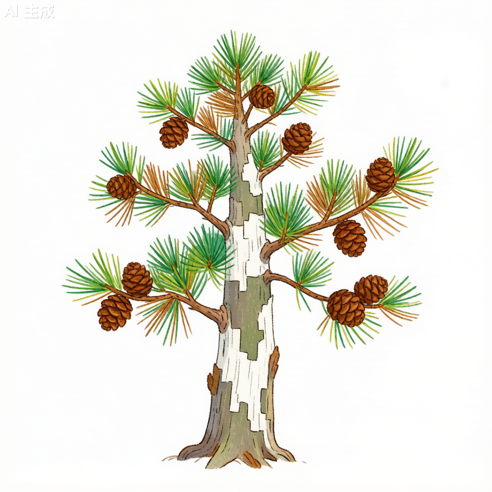

白皮松 Pinus bungeana

形态特征
白皮松（Pinus bungeana）为常绿乔木，高15–25米，可达30米，胸径可达1米以上。树皮幼时灰绿色，光滑；随着年龄增长，树皮呈不规则片状剥落，露出白色内皮，形成白褐相间的斑驳状图案，是其最显著的识别特征。冬芽卵形，红褐色。针叶3针一束，长5–10厘米，径约1.5–2毫米，粗硬，叶缘有细锯齿，叶鞘早落。球果卵圆形，长5–7厘米，熟时淡黄褐色。种子倒卵圆形，长约1厘米，有翅（晚熟类型有时无翅）。球果成熟期在9–10月。与其他松属植物最大的区别在于独特的树皮呈现斑驳白干和3针一束的针叶形态。
分布与生境
白皮松为中国特有珍稀树种，主产于山西、河北、河南、陕西、甘肃、四川北部和湖北西部。垂直分布可达海拔2,000米。喜光，耐旱、耐寒、耐干旱瘠薄，在石质山地、石灰岩山地和黄土丘陵均可生长。对土壤pH适应范围广，在酸性、中性至微碱性土壤中均能生长，是松类中最耐钙质土壤的树种之一。
分类学
白皮松为松科（Pinaceae）松属（Pinus）植物。种加词"bungeana"用以纪念俄国植物学家亚历山大·冯·本格（Alexander von Bunge），他于1831年在北京附近采集了该物种的模式标本。白皮松属于松属单维管束亚属（Pinus subg. Strobus）。3针一束的针叶在松属中较为少见（多数为2针或5针一束）。白皮松是北方园林中极为珍贵的观赏树种。
生态习性
白皮松为喜光阳性树种，但幼树稍耐阴。深根性，主根发达，侧根较少，抗风力中等。耐寒性强，可耐-30℃低温；耐旱性强，在年降水量400–600毫米的干旱地区也能生长；耐瘠薄，在土层浅薄的石质山地可正常生长。生长速度较为缓慢，20年生树高约5–8米。寿命极长，可达千年以上，北京北海公园和戒台寺有树龄逾千年的古白皮松。对二氧化硫等有害气体有较强抗性。
利用与文化
白皮松以其独特的斑驳白色树干而闻名，被誉为"园林奇葩"。其树皮呈不规则的白色、灰绿色和浅褐色斑块相间，在松属植物中独一无二，被称为"美人松"。白皮松是北方皇家园林的标配树种，北京北海公园团城上的"白袍将军"（800年树龄的白皮松）、戒台寺的古白皮松群均为著名古树名木。木材材质较脆，纹理直，可供建筑、家具及文具用。树姿优美，树形挺拔，四季常青，是庭院孤植或对植的上佳选择。种子可食。
参考文献
- 《中国植物志》第7卷: 268页. 科学出版社.
- 傅立国. 1991. 中国珍稀濒危植物. 上海教育出版社.
- 李永良. 2005. 白皮松天然林群落特征研究. 林业科学.